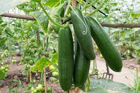
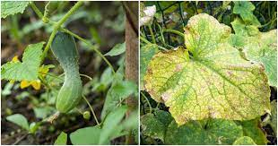

Cucumber, scientifically known as Cucumis sativus, is a warm-season vegetable that belongs to the gourd family. It is prized for its crisp texture and refreshing taste, making it a popular choice in salads, pickles, and various culinary dishes.
Cucumbers are known for their vigorous growth and prolific yields under the right conditions. Whether you're a home gardener or a commercial farmer, understanding the key aspects of cucumber cultivation is essential for a successful harvest.
Cucumbers thrive in well-drained, fertile soil with a slightly acidic to neutral pH. They require full sunlight for at least 6-8 hours a day. To get started, you can either sow cucumber seeds directly into the soil or begin with seedlings indoors and later transplant them outdoors.
There are various cucumber varieties, each with distinct characteristics suited for different culinary purposes. Whether you're interested in slicing cucumbers for salads or pickling cucumbers for jars, here are some popular varieties:
Cucumbers can face challenges from pests and diseases. Common issues include cucumber beetles, aphids, and powdery mildew. Implementing preventive measures, such as companion planting and regular inspection, can help manage these problems effectively.
Harvesting cucumbers at the right time ensures optimal flavor and texture. Most varieties are ready for harvest 50-70 days after planting. Harvesting should be done when the fruits are firm, well-colored, and of the desired size. Store cucumbers in the refrigerator to maintain freshness.